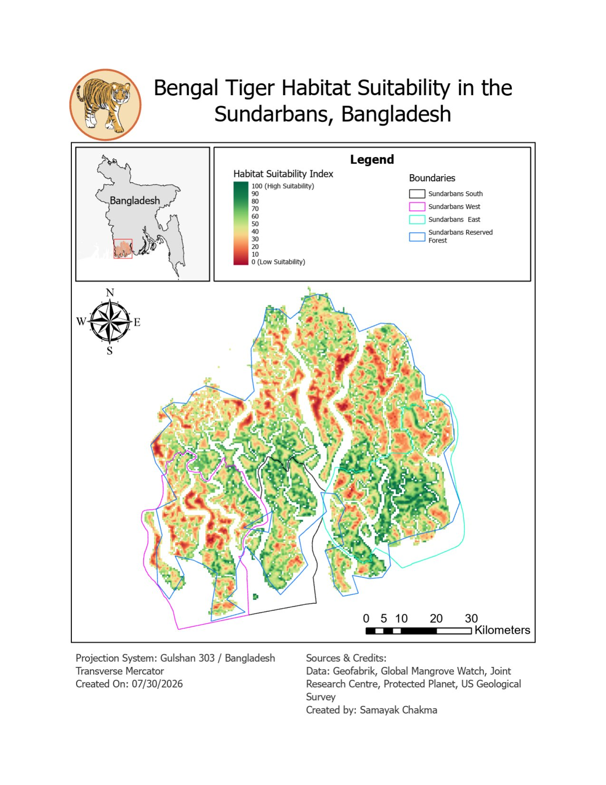

01
Bengal Tiger Habitat Suitability in the Sundarbans, Bangladesh
Built a habitat suitability index (0–100) for Bengal tigers across the Sundarbans mangrove forest. I combined environmental and human-impact layers from Global Mangrove Watch, the Joint Research Centre, the US Geological Survey and OpenStreetMap (Geofabrik), then standardized, weighted and overlaid them to identify the most and least suitable habitat.
The results are clipped to the Sundarbans Reserved Forest and shown with the East, West and South protected-area boundaries from Protected Planet. The map is projected in Gulshan 303 / Bangladesh Transverse Mercator and includes a locator inset of Bangladesh.
View full map (PDF) →